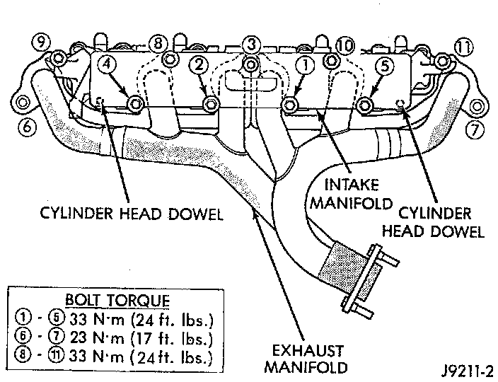

Exhaust Manifold: Specifications

NOTE: If the manifold is being replaced, ensure all the fitting, etc. are transferred to the replacement manifold.
1. Install a new engine exhaust/intake manifold gasket over the alignment dowels on the cylinder head.
2. Position the engine exhaust manifold to the cylinder head. Install fastener Number 3 and finger tighten at this time.
3. Install intake manifold on the cylinder head dowels.
4. Install washer and fastener Numbers 1, 2, 4, 5, 8, 9, 10 and 11.
5. Install washer-and fastener Numbers 6 and 7.
6. Tighten the fasteners in sequence and to the specified torque.
^ Fastener Numbers 1 through 5, Tighten to 33 Nm (24 ft. lbs.) torque.
^ Fastener Numbers 6 and 7, Tighten to 31 Nm (23 ft. lbs.) torque.
^ Fastener Numbers 8 through 11, Tighten to 33 Nm (24 ft. lbs.) torque.